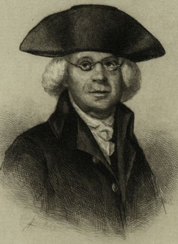

* Abraham Yates, Jr.
Abraham Yates, Jr. was born in August 1724.  He was the son of Albany natives Christofel and Catalina Winne Yates. He generally was referred to as "Abraham Yates, Jr." probably to distinguish him as the younger Abraham Yates born during 1724 and also from a number of same-named contemporaries living in old Albany County as well as from at least two others then living in the city of Albany. Many variants of his name have been encountered during his own life and from subsequent references to him.
He grew up as a younger child (the 9th of 10 births) in the large family of a second ward blacksmith. Traditional sources tell us that he was apprenticed to a cobbler to learn the shoemaker's trade. However, little actual evidence supports him ever following that calling. Instead, he is said to have found his way into the library of attorney William Corry where he began to read for the law.
By the mid 1740s, he had married young Anna De Ridder, the daughter of a regional landholder. Although their marriage does not appear to have been recorded at the Albany Dutch church, five children were christened there between 1747 and 1762. Only the younger daughter appears to have survived to marriage age. The couple were regular baptism sponsors during the 1750s and 60s. They also appear to have been pewholders at the church.
In September 1754, Yates was named sheriff for Albany city and county. He probably received this annual appointment of the provincial governor due to the agency of Robert Livingston, Jr., lord of Livingston Manor. He was re-appointed (a designation that required confirmation by the provincial council) each year until 1759 when he was replaced by Albany insider Jacob A. Van Schaick. Yates was thirty when he became sheriff. His manuscript journal and copybook covering those years details the varied nature of his duties, how dangerous his work could become, and his personal experiences that raised issues that would make him a Revolutionary leader in the years to come.
The extent of Yates's legal training (or of any formal education for that matter) has been difficult to determine. His subsequent writings reveal a varied acquaintance with the works of a number of the leading legal theorists of the time. The extent of Corry's actual mentoring is likewise unknown. Nevertheless, Abraham Yates, Jr. was licensed to practice law in New York in October 1759.
By that time, he had established a record of public service in city government. He first was appointed constable for his home second ward in 1745 and afterward. In 1750, he served as firemaster also in the second ward. In 1753, he was elected assistant alderman for the third ward where he seems to have begun his adult/married life. Re-elected each September for a number of years, Abraham Yates, Jr. had become a mainstay in city government. His promotion to alderman beginning in 1763 identified him as a leader in city circles. During the 1760s and into the 70s, he continued to practice law, lost a bid for the provincial assembly, and also traded in wines and other commodities from his Market Street home.
Into his fourth decade at the close of the last colonial war, Abraham Yates's familiarity with Enlightenment philosophy and active experiences as sheriff left him with serious reservations regarding the validity of America's place within a British empire and regarding the justice of the inequitable aristocracy of wealth that has emerged in the colonies over the past century.
By 1773, Yates had served continuously on the city Corporation for more than two decades. Along the way, he had gathered a team of mostly younger supporters on the council and in the community. By that time, he had been joined on the council by his younger kinsmen Robert Yates and Peter W. Yates - who represented the city's other two wards. Probably because of his growing satisfaction with the status quo in a number of critical areas, Abraham Yates. Jr was ousted from his aldermanic seat in the fall elections of 1773. He immediately yet unsuccessfully challenged the election. That ended Yates's official connection to the provincial (royal) government.
Shortly thereafter, news of the dumping of the imported tea into Boston harbor reached Albany. By the beginning of 1775, an Albany Committee of Correspondence had emerged with Yates as its first chairman. Within a year, the Committee had become Albany's de-facto government in a political climate moving from resistance to rebellion to revolution.
In 1775, the royal government in New York ceased to function. Its province-wide operations were assumed by a succession of Provincial Congresses composed of pro-American representatives from each of the counties. Abraham Yates, Jr. represented Albany on each of them - requiring him to spend a good part of the next two years in New York City and then at the temporary homes the Congress/Convention occupied in White Plains, Fishkill, and Kingston. In that capacity, he served as chairman of the select Calmat appointed to write the first New York State Constitution.
As Yates served more and more at the state and then national levels, a number of more Albany responsibilities devolved on his local protégés - chiefly Matthew Visscher and his son-in-law Abraham G. Lansing.
The life and career of Abraham Yates, Jr. provided the initial spark for the formation of the Colonial Albany Social History Project in every way. Because I knew the most about him following publication of my first extended essay in 1975, AYJr. became a test case to see what would be needed to bring the other 15,999-odd people who met inclusion criteria to the level that we might have thought we "knew" this endlessly engaging historical character. Thus, Abraham Yates, Jr. became CAP biography number 1. Since then, I have tried to ignore him and work on the others and on everything else relevant to his past and his then-present world.
Abraham Yates, Jr. has never received his due on this website. To feature him from the outset would have been to commit the tragic flaw of all biography - to focus on the MAN and the incredibly narrow path he cut though the past. Renewed, recent, and welcome interest in the subject has prompted this initiative to make the subject equal to the others in the early Albany story and to take him far beyond in a way I could not even have contemplated doing more than 40 years ago.
For those who want more from me on this seminal historical character, I could apologize but . . .
 Sources: The life of Abraham Yates, Jr. is CAP biography number 1. This sketch is derived chiefly from family and community-based resources. I have attempted to base this work on verifiable research. However, I do make frequent use of what I call "traditional sources" and have tried to qualify their use - whenever possible!
Sources: The life of Abraham Yates, Jr. is CAP biography number 1. This sketch is derived chiefly from family and community-based resources. I have attempted to base this work on verifiable research. However, I do make frequent use of what I call "traditional sources" and have tried to qualify their use - whenever possible!
Manuscripts: At the outset (prior to 1975), I searched for and collected copies of all manuscripts generated by Yates. I transcribed most of them. The main core of the Abraham Yates, Jr. papers reside as at the New York Public Library. An old typescript box-by-box-+ listing has been encountered in pdf form. Viewed on microfilm more than 40 years ago, they formed the initial basis for my study during the early 1970s. I then made a broad sweep of likely repositories and found a number of his so-called papers chiefly as parts of other (and numerous) manuscripts collections.. Also available online at this time are overlapping and sometimes additional items at the National Archives. In the collection and re-search for biographical source material, the inspiration provided by young Stephan Wolf during the 1990s and because of his work since then cannot be underestimated. However, the main fruit of his much more comprehensive treatment of Yates's life is embodied in the published version (1997) of his doctoral dissertation, and exists (to the best of my knowledge) in German language only. A review of that document by historian Winfred E. A. Bernhard was published in the Journal of American History in 2002.
The most recent interpretive work on Yates was authored by historian/writer Russell Shorto (2016) and focuses on his years as sheriff of Albany County. Entitled "The Sheriff of Albany County," it is available online. Abraham Yates, Jr. is a central character in a forthcoming book on people who lived through the American Revolution.
Additional online biographies (too numerous to chronicle here) begin with Famous Americans via Virtuology; much more to come!
Portrait: Engraving said to have been made by Max Rosenthal and dated about 1860. It was taken from a contemporary portrait by "Robert" (sometimes referenced as "H. Robert[s]") and presented to the New York Bar Association by Catherine Gansevoort Lansing, widow of Abraham Lansing, the subject's great-grandson. See Yearbook of the Bar Association of the City of New York for 1901. Original unlocated at present.
Name variants: The Yates surname continued to perplex Albany recorders. During the first half of the eighteenth century, the following variants for Yates were encountered in the Albany church records (Jeets, Jets, Jates, Yets, Jetz, Jaits, Yeets, Yeats, Yaets, Jaets, Joets, Jaats, Jetz, Iets, Yets, Yoets, Yerkes).
Account Book: his manuscript business accounts covering those years have been held at the New York Public Library, the Manuscripts Division of the New York State Library, and elsewhere. They have not yet been analyzed.
My plan for expanding this work on Yates (begun in 2014) is to write some and think a lot to bring out what I have come to believe about this extraordinary early Albanian! Then I write some more. At the present rate, this initiative could take a while to develop!!!
Colonists become Revolutionaries: Many people have overviewed this transition - myself included on numerous occasions. Hopefully, I am not done with this topic. At this point, please consider online offerings from my first monograph on the topic published in 1975. Four decades later, that 64-page work is sometimes available online.